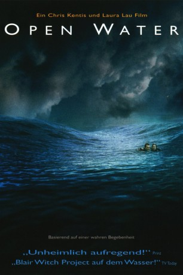

#4684 Open Water
 
 IMDB-Wertung: 5.7 / 10
IMDB-Wertung: 5.7 / 10  Metascore: 0
Metascore: 0 
Susan und Danie stehen mit beiden Beinen fest im Leben. Beide haben einen festen Job und gehen in ihrer Arbeit voll auf, wobei nur leider die Beziehung oftmals zu kurz kommt. Ein gemeinsamer Urlaub soll alles wieder ins rechte Licht rücken und so entschließt man sich, einen romantischen Urlaubstrip auf einer karibischen Trauminsel zu buchen. Die Farbe des Wassers lädt zu einem Tauchgang ein, also fährt das junge Paar mit einer Tauchergruppe aufs offene Meer hinaus - nicht ahnend, dass dieser Tauchgang schon bald zu ihrem schlimmsten Albtraum werden wird…
Jahr: 2003
Dauer: 80 Minuten
FSK: 12
Land: USA Studio: Lions Gate FilmsTonspuren: DTS - ,
Untertitel:
Auflösung: 1080p (1920x1040) Größe: 6809 MB
Genre: Thriller, Horror, Drama, Abenteuer, Liebe, Biographie
Regisseur: Chris Kentis
Drehbuch: Ken Sanzel
Soundtrack:
Darsteller:
- Blanchard Ryan als Susan Watkins
- Daniel Travis als Daniel Kintner
 Saul Stein als Seth
Saul Stein als Seth- Steve Lemme als Scuba Diver , uncredited
- Michael E. Williamson als Davis
- Cristina Zenato als Linda
- John Charles als Junior
- Estelle Lau als Estelle
Datei: X:\3-Trilogie(N-Z)\Open Water\Open Water (2003, FSK12, 1920x1040).mkv seit 03.11.2016
Festplatte: HD Collection-3(N-Z)-6(A-Z)
 Alle Filme aus Gruppe '3-Trilogie(N-Z)\Open Water'
Alle Filme aus Gruppe '3-Trilogie(N-Z)\Open Water'